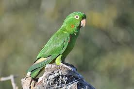

| Classificação Científica | |
|---|---|
| Reino: | Animalia |
| Filo: | Chordata |
| Classe: | Aves |
| Ordem: | Psittaciformes |
| Família: | Psittacidae |
| Gênero: | Psittacara |
| Espécie: | P. leucophthalma |
| Nome binomial: | Psittacara leucophthalmus |


O periquitão-maracanã (Psittacara leucophthalmus[1]), conhecido por aratinga-de-bando, araguaguaí, araguaí, araguari, aruaí, maracanã, maricatã ou maritaca, é uma ave da ordem Psittaciformes, família Psittacidae.
Aparência

Tem plumagem verde com algumas penas vermelhas nos lados da cabeça, asas com partes inferiores amarelas e encontros vermelhos, ambos visíveis em voo. Apresenta manchas vermelhas na altura do pescoço e coberteiras inferiores das asas vermelhas e amarelas, que variam dependendo da idade da ave. O bico é claro, e a região perioftálmica é nua e branca, e a íris é laranja.[2] Mede, em média, entre 30 e 32 cm.
Distribuição geográfica
Ocorre das Guianas à Argentina e por quase todo o Brasil, sendo encontrado desde em florestas até cidades. É ave adaptável a ambientes alterados pelo homem.
Dieta
O periquitão-maracanã se alimenta, principalmente, de frutos e sementes porém pode se alimentar também de insetos e bagas.
Hábitos
Vive em bandos grandes, compostos de 30 a 40 indivíduos (ou mais), que dormem coletivamente em variados lugares. Os casais, no entanto, nidificam isoladamente em ocos de pau, paredões de pedra, afloramentos calcários, barrancos e também embaixo de telhados de edificações humanas, o que ajuda muito na sua ocupação de espaços urbanos. Mantêm-se discretos quando nidificam em habitações, chegando e saindo do ninho silenciosamente e esperando pousados em árvores até que possam voar para o ninho sem serem percebidos. Como a maior parte dos psitacídeos, não coletam materiais para a construção do ninho, colocando e chocando os ovos diretamente sobre o solo do local de nidificação.
Cativeiro
No Brasil, pode ser adquirido com nota fiscal e autorização do IBAMA.